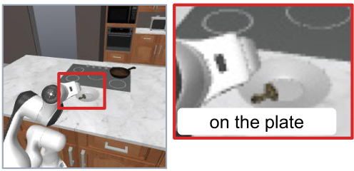
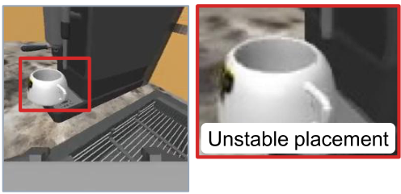
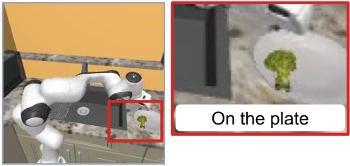

The task is to place a mug under the coffee dispenser. The native check passes because the mug is nearby and the gripper has moved away. The wrist view shows the mug lying on its side, so PROVE and human reviewers mark the rollout as a failure.
RoboCasa
Success
PROVE
Failure
Human
Failure
Human agreement with PROVE
96.83%
Human-annotated rollouts
6,500
Atomic actions in RoboCasa365
65
Speedup with PROVE-Lite
~38×
Abstract
Household manipulation admits several valid outcomes, even for the same instruction. Evaluators must account for the scene layout, the target object and the state of fixtures. On RoboCasa365, native simulator predicates agree with human labels on 69.09% of rollouts, and a frontier direct VLM judge reaches 86.12%.
PROVE builds a scene-specific success specification before evaluating a rollout. It progressively refines textual conditions using the instruction, initial scene, object reference and a generated goal image. To verify success, it checks the resulting conditions against terminal observations. On 6,500 human-annotated rollouts across 65 atomic actions, PROVE achieves 96.83% human agreement and changes the ranking of four open-source robot policies relative to native evaluation.
PROVE-Lite distills the evaluator into a reference-free 4B model that jointly predicts the outcome and the physical state of each task condition. It reaches 91.20% human agreement at about 38× lower latency than PROVE. Its diagnoses support a graded terminal reward that improves PPO post-training over simulator and binary PROVE-Lite rewards.
Predict to specify. Observe to verify.
One frozen Qwen3-VL-8B model refines the success criteria in three stages. In the paper’s cabinet example, early criteria require putting the mug inside and closing the door. The initial scene shows the door was already open, and a target-object reference identifies the blue mug. A generated goal image then helps specify full containment, stable support and release.
PROVE overview. The goal image informs the textual criteria during specification. Once those criteria are fixed, the verifier checks six terminal frames across three camera views and returns a verdict and the main observable reason for failure.
Inspect the evidence
Three rollouts from the paper show how each evaluator handles physical evidence at the end of an episode.

Place the mushroom on the plate
The close-up shows the mushroom resting on the plate. The native check rejects it because the placement falls outside its distance threshold.
RoboCasa
Failure
PROVE
Success
PROVE-Lite
Success
Human
Success

Place the mug under the coffee dispenser
The mug is in the target region but rests at an angle. PROVE and PROVE-Lite both diagnose unstable placement, matching the human verdict.
RoboCasa
Success
PROVE
Failure
PROVE-Lite
Failure
Human
Failure

Place the broccoli on the plate
Humans accept the broccoli placement. PROVE misjudges containment and support, and PROVE-Lite inherits the error.
RoboCasa
Success
PROVE
Failure
PROVE-Lite
Failure
Human
Success
PROVE-Lite for policy learning
PROVE labels 32,500 training rollouts from scenes disjoint from the benchmark. PROVE-Lite learns from these pseudo-labels and reads the task prompt and terminal frames in a single forward pass. Two heads predict binary success and the terminal state of each active condition. The model needs no reference images during inference.
Offline distillation, single-pass diagnosis and diagnosis-guided PPO.
Grade failures by severity
For a fridge-closing task, the condition class can be closed, narrow gap or open. Their severity penalties are 0, 0.3 and 1.0, respectively.
The terminal reward combines a binary success prediction S with physical completion C.
R = 0.8 S + 0.2 C
A failed rollout with a narrow gap earns 0.14. A failed rollout that leaves the door open earns 0.
Experimental results
Agreement with humans
Adding the initial scene and target reference raises agreement from 82.52% (M1) to 87.89% (M2). Goal-guided specification raises it to 96.83% (M3). Providing the generated goal again at verification lowers M3 agreement to 90.42%.
Evaluator
Agreement
Wrong acceptance
Success rejection
Native simulator predicate
69.09%
22.32%
37.16%
GPT-6.1 Sol, direct judge
86.12%
14.50%
13.42%
PROVE (M3)
96.83%
5.84%
1.22%
PROVE-Lite
91.20%
6.21%
10.69%
Selected rows from Table 2. Wrong acceptance is measured over human-labeled failures. Success rejection is measured over human-labeled successes.
Re-evaluating robot policies
Blind human review agreed with PROVE on 8,280 of 8,677 disagreements (95.42%). Among four open-source policies, RLDX-1 moved from second to fourth while PRTS moved from third to second.
Policy
Native success (rank)
PROVE success (rank)
Awomo-0.5I
86.75% (1)
46.29% (1)
PRTS
66.08% (3)
43.91% (2)
GR00T N1.5
53.06% (4)
41.12% (3)
RLDX-1
69.98% (2)
40.11% (4)
Latency and post-training
On one NVIDIA RTX PRO 4500 GPU, PROVE-Lite averages 0.27 s per episode versus 10.21 s for PROVE. Its peak memory is 8.97 GB versus 16.95 GB.
Across 15 RoboCasa365 tasks and four seeds, graded PROVE-Lite rewards achieve 56.58% PROVE-judged success, up 4.58 percentage points over simulator rewards (52.00%) and 2.00 points over binary PROVE-Lite rewards (54.58%). The base policy achieves 50.17%.
Held-out PPO results. Small markers show individual seeds. Diamonds and error bars show the mean and sample standard deviation.
Citation
BibTeX
@unpublished{lyu2026prove,
title = {{PROVE}: Predict-to-Specify and Observe-to-Verify for Human-Aligned Evaluation of Mobile Manipulation},
author = {Lyu, Bowen and Liu, Yunan and Fan, Liaoyuan and Cheng, Qinchuan and Duan, Jiafei and Tan, Cheston and Li, Shijie},
year = {2026},
note = {Preprint}
}